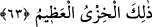

Haddâdî der ki: Âyette “onları/ikisini râzı etmeleri” buyurulmamıştır. Çünkü Allah’ın
ismi ile O’nun herhangi bir peygamberinin ismini aynı zamirde zikredip iki ismi bir
zamirde cemetmek mekruh olur. Nitekim rivayet edildiğine göre bir kişi Hz. Peygamber
(a.s.)’ın bulunduğu bir mecliste bir konuşma yaptı ve şöyle dedi:
“Kim Allah’a ve Rasûlü’ne itâat ederse doğru yolu bulmuş, kim de onlara isyan
ederse sapıtmıştır.” Bunun üzerine Peygamber (a.s.) şöyle buyurmuştur: “Sen ne kötü
bir hatipsin. “Kim de Allah’a ve Rasûlüne isyan ederse...” deseydin ya.”[186]
Ebkâru’l-efkâr müellifi demiştir ki: Peygamber Efendimiz bu sözüyle konuşmada
riâyet edilmesi gereken edebi öğretmek istemiş ve Allah’ın ismi ile başkasının ismini
bir zamirde cemetmenin mekruh olduğunu bildirmiştir. Çünkü bu, bir nevi Allah ile
başkasını denk görme mânâsı taşır.
Sa‘dî (k.s.) der ki:
Konuşanın kusurunu kimse açığa vurmazsa
Sözü düzene girmez.
Sözünün güzelliğine aldanma
Bilgisizin güzel demesine ve kendi zannına kanma
Bir hadîste: “Allah dilerse ve falan dilerse.” demeyin. Fakat “Allah dilerse, sonra
da falan dilerse.” deyin.”[187] buyurulmuştur.
Hattâbî der ki: Hadis, edebli olmayı öğretmektedir. Çünkü “vâv” birleştirmek ve iki
şeyi bir konuda ortak yapmak içindir. “ (sonra)” edatı ise tertibe ve sonra gelene
dikkat ederek atıf yapmak içindir. Peygamber (a.s.), Allah’ın meşîetini (dilemesini),
başkasının meşîetinden önce zikretmek gerektiğine irşâd etmiştir.
Bundan dolayıdır ki Nehaî, bir kişinin “Allah’a ve sana sığınırım” demesini kerih
görmekte, fakat “Allah’a sığınırım sonra sana” demesini ise câiz görmektedir.
“Şayet Allah olmasaydı, sonra da falan olmasaydı şöyle şöyle yapardım.” demekte bir
sakınca yoktur, fakat “Allah ve falan olmasaydı şöyle şöyle yapardım” denmez. Ancak
“Kim Allah’a ve Rasûlüne itaat ederse” denir. Çünkü Allah, kullarına Rasûlullah
(a.s.)’a itaati farz kılmak suretiyle itaate çağırmıştır. Rasûlullah (a.s.)’a itâat edildiği
zaman Allah’a itâat edilmiş olur.
63. Bilmediler mi ki kim Allah’a ve Elçisi’ne karşı koymağa kalkarsa onun için
sürekli kalacağı cehennem ateşi vardır. İşte, büyük rezillik budur.